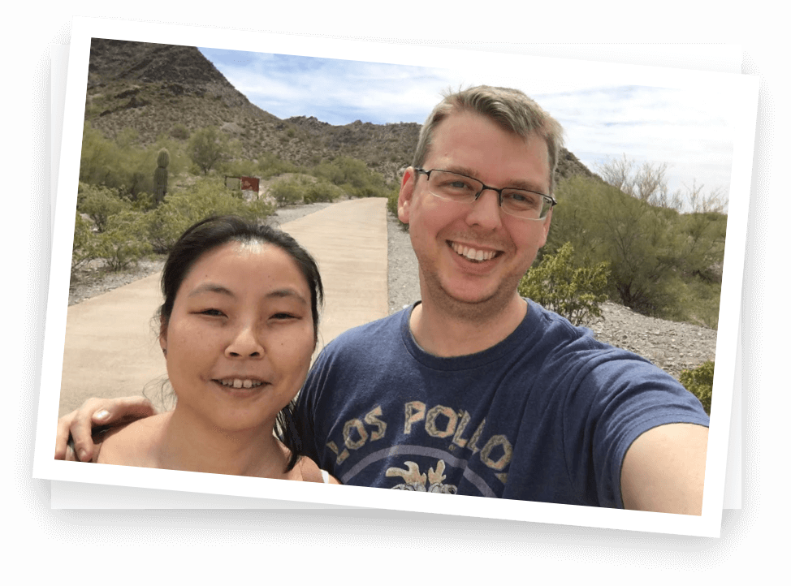

Phoenix Group is a specialized organization dedicated to guiding and supporting anyone whose personal and professional life has been damaged due to social anxiety. While our main service is our weekly group meetings, we are a living and growing community solely dedicated to a population that has been largely ignored.
Our group meetings include discussions regarding cognitive techniques that help us to see ourselves and the world differently, subsequently reducing feelings of anxiety in social situations. Each member has the option to share a proactivity report so we can share what we've accomplished in regards to acting against our anxiety. In addition, we create opportunities to practice coping with social anxiety by participating in "behavioral exercises" such as introducing ourselves in a business meeting type setting, mingling with others, speaking louder in a crowd, and others. Furthermore, we are each given an "individual time" where we can work on specific techniques and situations. For example, someone might give a brief presentation, practice being interviewed for employment, or even just reading in front of others. Lastly, we will plan out our activities for the week which allows us to practice our techniques in the "real world". These can be anything that the group agrees on as long as at least 2-3 people are able to attend. We coordinate our activities using whatsapp.
Social anxiety is a problem that can ruin someoneís life. It can trap and imprison a person so that they are void of essential interaction and a basic need for acceptance we all need. If you struggle in this way, you can deserve help to overcome it, and with time and persistence, you will.
I've struggled with social anxiety since grade school, though I didnít realize it at the time. I thought that I was just shy and would grow out of it. Socializing with other people seemed like a foreign concept and was intimidating to me. As time went by, I didnít grow out of it. It got worse. At times, I seemed to get better but would often slip back into my old habits. Something would happen that reminded me that I was in over my head. In college, I found myself entirely isolated. The only social interaction I would get would be in my classes, work, and church. I would only do the bare minimum that I needed to and retreat back to my apartment and be alone with my thoughts. I became desperate and sought help. My major was in Psychology and I graduated earning my B.A. I saw many different counselors, though I felt many of them did not understand what I was struggling with. However, I was lucky enough to come across a psychologist who specialized in social anxiety and actually ran a CBT therapy group. In short, it drastically changed my life.
Around this time, I started my masters in mental health counseling. Alongside the therapy I was doing on myself, I was taking courses in counseling theories and application. I developed a strong understanding of these concepts and how to convey them to other people. I have not finished my graduate studies because I noticed that the social anxiety population was one that was largely ignored in the mental health field. I chose instead to focus on establishing a peer run mutual support group that treated members through education regarding concepts addressed in cognitive behavioral therapy. I realized that I could best help this population not so much by counseling them as a professional, but as a peer who would share information that I had learned from my many years of therapy and education. My goal now is to make this experience commonplace so anyone who finds themselves struggling with social anxiety can find a place of support and healing alongside their peers.